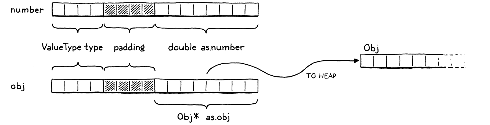
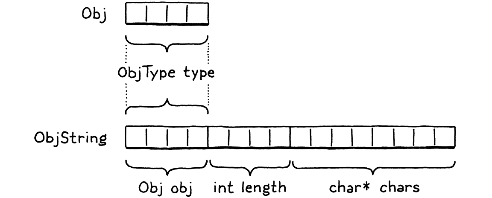

字符串
「啊？对琐碎的活儿有点抵触？」大夫挑了挑眉毛。「可以理解，但大可不必。人应该珍惜那些单调乏味的活计——它们占住了身体，却让脑子和心思无拘无束。」
泰德·威廉姆斯，《龙骨椅》
我们的小虚拟机现在能表示三种值：数字、布尔值和 nil。这几种类型有两个重要的共同点：它们不可变，而且很小。数字是最大的，也仍然塞得进两个 64 位字。这个代价小到我们为所有值都付得起，哪怕是不需要那么大空间的布尔值和 nil。
可惜，字符串就没这么娇小了。字符串根本没有最大长度。哪怕我们人为地设一个像 255 个字符这样硬凑出来的上限，那要摊在每一个值上的内存也还是太多。
我们需要一种办法来支持大小会变化、有时变化很大的值。堆上的动态分配正是为此设计的。我们想分配多少字节就分配多少字节，拿回来一个指针，用它在这个值流经虚拟机时一路跟踪它。
19 . 1值与对象
较大的、大小可变的值用堆，较小的、原子的值用栈，这就带来一种两级表示法。你能存进变量、或从表达式返回的每一个 Lox 值，都是一个 Value。对于数字这类小的、固定大小的类型，载荷就直接存进 Value 结构体内部。
如果对象更大，它的数据就住在堆上。此时 Value 的载荷是一个指向那块内存的指针。clox 里最终会有好几种堆分配的类型：字符串、实例、函数，你懂的。每种类型都有自己独有的数据，但也都有一些共享的状态，我们日后的垃圾回收器会用它来管理这些对象的内存。

我们把这种共同的表示叫作「Obj」。凡是状态存在堆上的 Lox 值，都是 Obj。这样我们就能用一个新的 ValueType 分支来指代所有堆分配的类型。
VAL_NUMBER,
在枚举 ValueType 内
VAL_OBJ
} ValueType;
当一个 Value 的类型是 VAL_OBJ 时，载荷是指向堆内存的指针，所以我们往联合体里再加一个对应的分支。
double number;
在结构体 Value 内
Obj* obj;
} as;
跟处理其他值类型时一样，我们再造出几个好用的宏来处理 Obj 值。
#define IS_NUMBER(value) ((value).type == VAL_NUMBER)
加在结构体 Value 之后
#define IS_OBJ(value) ((value).type == VAL_OBJ)
#define AS_BOOL(value) ((value).as.boolean)
如果给定的 Value 是个 Obj，它就求值为 true。若是，我们就可以用这个：
#define IS_OBJ(value) ((value).type == VAL_OBJ)
#define AS_OBJ(value) ((value).as.obj)
#define AS_BOOL(value) ((value).as.boolean)
这个宏从这个值里取出 Obj 指针。我们也可以反过来。
#define NUMBER_VAL(value) ((Value){VAL_NUMBER, {.number = value}})
#define OBJ_VAL(object) ((Value){VAL_OBJ, {.obj = (Obj*)object}})
typedef struct {
这个宏拿一个光秃秃的 Obj 指针，把它包成一个完整的 Value。
19 . 2结构体继承
每一个堆分配的值都是个 Obj，但 Obj 并不都一样。对字符串，我们需要那串字符。等做到实例时，它们需要自己的数据字段。一个函数对象需要它的字节码块。面对不同的载荷和大小，我们怎么办？我们没法像 Value 那样再用一个联合体，因为大小参差不齐。
我们改用另一种技术。它已经存在很久了，久到 C 规范都专门为它留出了支持，但我不知道它有没有一个正式名字。它是类型双关的一个例子，可那个词太宽泛了。既然想不出更好的名字，我就叫它结构体继承吧，因为它靠的是结构体，而且大致跟面向对象语言里状态的单继承方式相仿。
跟带标签联合体一样，每个 Obj 都以一个标签字段开头，标明它是哪种对象——字符串、实例等等。标签之后是载荷字段。我们不用一个带各种类型分支的联合体，而是让每种类型各自成为一个独立的结构体。棘手的地方在于，既然 C 没有继承或多态的概念，我们要怎么一视同仁地对待这些结构体。这个我很快会解释，不过先把预备的东西清掉。
「Obj」这个名字本身就指代一个结构体，装着所有对象类型共享的状态。它有点像对象的「基类」。由于值和对象之间存在一些循环依赖，我们在「value」模块里对它做前置声明。
#include "common.h"
typedef struct Obj Obj;
typedef enum {
而真正的定义在一个新模块里。
新建文件
#ifndef clox_object_h #define clox_object_h #include "common.h" #include "value.h" struct Obj { ObjType type; }; #endif
眼下它只装着类型标签。过不多久，我们会为内存管理再加一些记账信息。类型枚举是这样的：
#include "value.h"
typedef enum { OBJ_STRING, } ObjType;
struct Obj {
显然，等后面几章加上更多堆分配的类型后，它会更有用。由于我们会频繁访问这些标签类型，值得做一个小宏，从给定的 Value 里取出对象类型标签。
#include "value.h"
#define OBJ_TYPE(value) (AS_OBJ(value)->type)
typedef enum {
这就是我们的地基。
现在，我们在它之上搭出字符串。字符串的载荷定义在一个单独的结构体里。同样，我们需要对它做前置声明。
typedef struct Obj Obj;
typedef struct ObjString ObjString;
typedef enum {
定义就挨着 Obj 放。
};
加在结构体 Obj 之后
struct ObjString { Obj obj; int length; char* chars; };
#endif
一个字符串对象含有一串字符。这些字符存在一个单独的、堆分配的数组里，好让每个字符串只占用所需的那么多空间。我们还存了数组里的字节数。这并非严格必需，但能让我们不必遍历字符数组去找空终止符，就知道为这个字符串分配了多少内存。
由于 ObjString 是个 Obj，它也需要所有 Obj 共享的那份状态。它的做法是把自己的第一个字段设成 Obj。C 规定结构体的字段按声明的顺序在内存里排列。而且，当你嵌套结构体时，内层结构体的字段会就地展开。所以 Obj 和 ObjString 在内存里长这样：

注意 ObjString 的头几个字节如何跟 Obj 精确对齐。这不是巧合——C 强制规定了这一点。这样设计是为了支持一个巧妙的套路：你可以拿一个指向结构体的指针，安全地把它转成指向其第一个字段的指针，再转回来。
给定一个 ObjString*，你可以安全地把它转成 Obj*，再从它那儿访问 type 字段。每个 ObjString 在「是」这个字的面向对象意义上，都「是」一个 Obj。等我们后面加入其他对象类型时，每个结构体都会把 Obj 作为它的第一个字段。任何想处理所有对象的代码，都可以把它们当成基类的 Obj*，忽略后面碰巧跟着的其他字段。
也可以反过来。给定一个 Obj*，你可以把它「向下转型」成一个 ObjString*。当然，你得确保手上这个 Obj* 指针确实指向某个真正的 ObjString 的 obj 字段。否则，你就是在不安全地重新解读内存里随机的比特。为了判断这样的转型是否安全，我们再加一个宏。
#define OBJ_TYPE(value) (AS_OBJ(value)->type)
#define IS_STRING(value) isObjType(value, OBJ_STRING)
typedef enum {
这个宏接收的是一个 Value，而不是裸的 Obj*（虚拟机里大多数代码都是跟 Value 打交道），并依赖这个内联函数：
};
加在结构体 ObjString 之后
static inline bool isObjType(Value value, ObjType type) { return IS_OBJ(value) && AS_OBJ(value)->type == type; }
#endif
随堂小测：为什么不干脆把这个函数体直接放进宏里？这一个跟其他几个有什么不同？对了，因为这个函数体用到了 value 两次。宏展开的方式，是把参数表达式插进函数体里参数名出现的每一处。如果一个宏用某个参数不止一次，那个表达式就会被求值多次。
如果这个表达式有副作用，那就糟了。要是我们把 isObjType() 的函数体塞进宏定义，然后你写了比如
IS_STRING(POP())
结果就会从栈上弹出两个值！改用函数就没有这个问题。
只要我们确保在创建某种类型的 Obj 时正确设好类型标签，这个宏就能告诉我们，什么时候把一个值转成特定对象类型是安全的。我们可以用下面这些来做到：
#define IS_STRING(value) isObjType(value, OBJ_STRING)
#define AS_STRING(value) ((ObjString*)AS_OBJ(value)) #define AS_CSTRING(value) (((ObjString*)AS_OBJ(value))->chars)
typedef enum {
这两个宏接收一个 Value，预期它里面装着指向堆上一个有效 ObjString 的指针。前者返回 ObjString* 指针，后者再往里走一步，返回字符数组本身，因为那往往是我们最终需要的东西。
19 . 3字符串
好，我们的虚拟机现在能表示字符串值了。是时候把字符串加进语言本身了。照例，从前端开始。词法分析器已经能把字符串字面量切成词法单元了，轮到语法解析器了。
[TOKEN_IDENTIFIER] = {NULL, NULL, PREC_NONE},
替换 1 行
[TOKEN_STRING] = {string, NULL, PREC_NONE},
[TOKEN_NUMBER] = {number, NULL, PREC_NONE},
当语法解析器碰到一个字符串词法单元时，它调用这个解析函数：
加在 number() 之后
static void string() { emitConstant(OBJ_VAL(copyString(parser.previous.start + 1, parser.previous.length - 2))); }
它直接从词素里取出字符串的字符。+ 1 和 - 2 那两处，是把首尾的引号削掉。然后它创建一个字符串对象，把它包进一个 Value，再塞进常量表。
要创建字符串，我们用 copyString()，它声明在 object.h 里。
};
加在结构体 ObjString 之后
ObjString* copyString(const char* chars, int length);
static inline bool isObjType(Value value, ObjType type) {
编译器模块需要把它包含进来。
#define clox_compiler_h
#include "object.h"
#include "vm.h"
我们的「object」模块添了一个实现文件，我们在那儿定义这个新函数。
新建文件
#include <stdio.h> #include <string.h> #include "memory.h" #include "object.h" #include "value.h" #include "vm.h" ObjString* copyString(const char* chars, int length) { char* heapChars = ALLOCATE(char, length + 1); memcpy(heapChars, chars, length); heapChars[length] = '\0'; return allocateString(heapChars, length); }
首先，我们在堆上分配一个新数组，大小刚好装得下字符串的字符和末尾的终止符，用的是这个底层宏——它按给定的元素类型和个数分配一个数组：
#include "common.h"
#define ALLOCATE(type, count) \ (type*)reallocate(NULL, 0, sizeof(type) * (count))
#define GROW_CAPACITY(capacity) \
有了数组之后，我们把词素里的字符复制过去，并给它加上终止符。
你也许会奇怪，ObjString 干嘛不干脆指回源代码里原来那串字符。因为有些 ObjString 是运行期由拼接这类字符串操作动态创建出来的。这些字符串显然需要为字符动态分配内存，也就意味着，当这些内存不再需要时，字符串得把它释放掉。
假如我们有一个用于字符串字面量的 ObjString，还试图去释放它那个指向原始源代码字符串的字符数组，那就要出乱子了。所以对字面量，我们抢先一步把字符复制到堆上。这样一来，每个 ObjString 都可靠地拥有自己的字符数组，也就能释放它了。
真正创建字符串对象的工作在这个函数里：
#include "vm.h"
static ObjString* allocateString(char* chars, int length) { ObjString* string = ALLOCATE_OBJ(ObjString, OBJ_STRING); string->length = length; string->chars = chars; return string; }
这个函数在堆上新建一个 ObjString，然后初始化它的字段。有点像面向对象语言里的构造函数。因此，它先用一个新宏调用「基类」的构造函数来初始化 Obj 状态。
#include "vm.h"
#define ALLOCATE_OBJ(type, objectType) \ (type*)allocateObject(sizeof(type), objectType)
static ObjString* allocateString(char* chars, int length) {
跟上一个宏一样，这个宏存在主要是为了避免反复把 void* 转回想要的类型。真正的功能在这里：
#define ALLOCATE_OBJ(type, objectType) \
(type*)allocateObject(sizeof(type), objectType)
static Obj* allocateObject(size_t size, ObjType type) { Obj* object = (Obj*)reallocate(NULL, 0, size); object->type = type; return object; }
static ObjString* allocateString(char* chars, int length) {
这个函数在堆上分配一个给定大小的对象。注意，这个大小并不只是 Obj 本身的大小。调用方传入字节数，好为正在创建的那个特定对象类型所需的额外载荷字段留出空间。
然后初始化 Obj 状态——眼下那只是类型标签。这个函数返回到 allocateString()，由它把 ObjString 的字段初始化完。Voilà，我们就能编译并执行字符串字面量了。
19 . 4字符串上的操作
我们花哨的字符串到位了，但还什么都干不了。好的第一步，是让现有的打印代码遇到这个新的值类型时不至于吐出来。
case VAL_NUMBER: printf("%g", AS_NUMBER(value)); break;
在 printValue() 内
case VAL_OBJ: printObject(value); break;
}
如果这个值是堆分配的对象，它就委托给「object」模块里的一个辅助函数。
ObjString* copyString(const char* chars, int length);
加在 copyString() 之后
void printObject(Value value);
static inline bool isObjType(Value value, ObjType type) {
实现长这样：
加在 copyString() 之后
void printObject(Value value) { switch (OBJ_TYPE(value)) { case OBJ_STRING: printf("%s", AS_CSTRING(value)); break; } }
现在我们只有一种对象类型，但这个函数在后面几章会长出更多的 switch 分支。对字符串对象，它只是把字符数组当作 C 字符串打印出来。
相等运算符也需要从容处理字符串。看这个：
"string" == "string"
这是两个彼此独立的字符串字面量。编译器会分别调用两次 copyString()，创建两个不同的 ObjString 对象，把它们作为两个常量存进字节码块。它们是堆上两个不同的对象。但我们的用户（因而也是我们）期望字符串是值相等。上面这个表达式应当求值为 true。这就需要一点特殊处理。
case VAL_NUMBER: return AS_NUMBER(a) == AS_NUMBER(b);
在 valuesEqual() 内
case VAL_OBJ: { ObjString* aString = AS_STRING(a); ObjString* bString = AS_STRING(b); return aString->length == bString->length && memcmp(aString->chars, bString->chars, aString->length) == 0; }
default: return false; // 走不到这儿。
如果两个值都是字符串，那么只要它们的字符数组含有相同的字符，它们就相等，不管它们是两个彼此独立的对象，还是同一个对象。这确实意味着字符串相等比其他类型的相等要慢，因为它得把整个字符串走一遍。我们后面会改进这一点，但眼下它给了我们正确的语义。
最后，为了用上 memcmp() 以及「object」模块里的新东西，我们需要几个 include。这里：
#include <stdio.h>
#include <string.h>
#include "memory.h"
还有这里：
#include <string.h>
#include "object.h"
#include "memory.h"
19 . 4 . 1拼接
成熟的语言为处理字符串提供了大量操作——访问单个字符、字符串长度、大小写转换、拆分、连接、查找等等。你在实现自己的语言时，多半会想要这些全套。但在这本书里，我们把东西保持得极其精简。
我们支持的唯一一个有意思的字符串操作是 +。你把这个运算符用在两个字符串对象上，它会产出一个新字符串，是两个操作数拼起来的结果。由于 Lox 是动态类型，编译期无法确定需要哪种行为——不到运行期就不知道操作数的类型。于是，OP_ADD 指令会在运行时动态检视操作数，选择正确的操作。
case OP_LESS: BINARY_OP(BOOL_VAL, <); break;
在 run() 内
替换 1 行
case OP_ADD: { if (IS_STRING(peek(0)) && IS_STRING(peek(1))) { concatenate(); } else if (IS_NUMBER(peek(0)) && IS_NUMBER(peek(1))) { double b = AS_NUMBER(pop()); double a = AS_NUMBER(pop()); push(NUMBER_VAL(a + b)); } else { runtimeError( "Operands must be two numbers or two strings."); return INTERPRET_RUNTIME_ERROR; } break; }
case OP_SUBTRACT: BINARY_OP(NUMBER_VAL, -); break;
如果两个操作数都是字符串，它就拼接。如果都是数字，它就相加。操作数类型的任何其他组合都是运行时错误。
为了拼接字符串，我们定义一个新函数。
加在 isFalsey() 之后
static void concatenate() { ObjString* b = AS_STRING(pop()); ObjString* a = AS_STRING(pop()); int length = a->length + b->length; char* chars = ALLOCATE(char, length + 1); memcpy(chars, a->chars, a->length); memcpy(chars + a->length, b->chars, b->length); chars[length] = '\0'; ObjString* result = takeString(chars, length); push(OBJ_VAL(result)); }
这个函数相当冗长，处理字符串的 C 代码往往如此。首先，我们根据操作数的长度算出结果字符串的长度。我们为结果分配一个字符数组，然后把两半复制进去。一如既往，我们小心确保字符串被加上终止符。
为了调用 memcpy()，虚拟机需要一个 include。
#include <stdio.h>
#include <string.h>
#include "common.h"
最后，我们产出一个 ObjString 来装这些字符。这一次我们用一个新函数 takeString()。
};
加在结构体 ObjString 之后
ObjString* takeString(char* chars, int length);
ObjString* copyString(const char* chars, int length);
实现长这样：
加在 allocateString() 之后
ObjString* takeString(char* chars, int length) { return allocateString(chars, length); }
前面的 copyString() 函数假定它不能接管你传进来的那串字符。它保守地在堆上复制一份字符，让 ObjString 拥有。对字符串字面量来说这是对的，因为传进来的字符位于源代码字符串的中间。
可对拼接来说，我们已经在一个堆上动态分配好了字符数组。再复制一份就是多余（还会让 concatenate() 得记着释放它那份副本）。于是这个函数直接宣称拥有你传给它的那串字符。
照例，把这份功能缝到一起需要几个 include。
#include "debug.h"
#include "object.h" #include "memory.h"
#include "vm.h"
19 . 5释放对象
瞧瞧这个看似人畜无害的表达式：
"st" + "ri" + "ng"
编译器把它啃过去的时候，会为那三个字符串字面量各分配一个 ObjString，存进字节码块的常量表，并生成这样的字节码：
0000 OP_CONSTANT 0 "st" 0002 OP_CONSTANT 1 "ri" 0004 OP_ADD 0005 OP_CONSTANT 2 "ng" 0007 OP_ADD 0008 OP_RETURN
头两条指令把 "st" 和 "ri" 压入栈。然后 OP_ADD 把它们弹出并拼接。这会在堆上动态分配一个新字符串 "stri"。虚拟机把它压入，接着压入常量 "ng"。最后那条 OP_ADD 弹出 "stri" 和 "ng"，把它们拼接起来，再压入结果："string"。很好，正是我们要的。
可是等等。那个 "stri" 字符串怎么了？我们动态分配了它，然后虚拟机在把它和 "ng" 拼接之后就把它丢了。我们把它从栈上弹出，不再有任何引用，却从没释放它的内存。我们给自己搞出了一个经典的内存泄漏。
当然，Lox 程序完全可以把中间字符串忘掉、不必操心释放它们。Lox 会替用户自动管理内存。管理内存的责任并没有消失，它落到了我们这些虚拟机实现者的肩上。
完整的解法是一个垃圾回收器，在程序运行期间回收不再使用的内存。在准备好着手那个项目之前，我们还有些别的东西要就位。在那之前，我们是活在借来的时间里。加回收器这件事拖得越久，就越难办。
今天，我们至少该做到最低限度：确保虚拟机仍然找得到每一个已分配的对象，哪怕 Lox 程序本身已经不再引用它们，从而避免内存泄漏。高级内存管理器用来分配和跟踪对象内存的精细技术有很多。我们采用最朴素的实用做法。
我们创建一个链表，存下每一个 Obj。虚拟机可以遍历这个链表，找出堆上分配过的每一个对象，无论用户程序或虚拟机的栈是否还持有对它的引用。
我们可以单独定义一个链表节点结构体，但那样还得为这些节点分配内存。我们改用侵入式链表——Obj 结构体本身就是链表节点。每个 Obj 拿一个指针，指向链上下一个 Obj。
struct Obj {
ObjType type;
在结构体 Obj 内
struct Obj* next;
};
虚拟机存一个指向链表头的指针。
Value* stackTop;
在结构体 VM 内
Obj* objects;
} VM;
我们初次初始化虚拟机时，还没有任何已分配的对象。
resetStack();
在 initVM() 内
vm.objects = NULL;
}
每当我们分配一个 Obj，就把它插进链表。
object->type = type;
在 allocateObject() 内
object->next = vm.objects; vm.objects = object;
return object;
由于这是单向链表，最简单的插入位置就是头。这样我们就不必另外存一个尾指针、还得时时更新它。
「object」模块直接用了「vm」模块里的全局 vm 变量，所以我们需要把它对外暴露出来。
} InterpretResult;
加在枚举 InterpretResult 之后
extern VM vm;
void initVM();
到最后，垃圾回收器会在虚拟机仍在运行时释放内存。但即便到那时，当用户程序结束时，通常也还会有没用过的对象残留在内存里。虚拟机也该把它们释放掉。
这不需要什么精细逻辑。程序一结束，我们就把每一个对象都释放掉。我们现在就能、也应该实现它。
void freeVM() {
在 freeVM() 内
freeObjects();
}
我们很早以前定义的那个空函数，终于有活干了！它调用这个：
void* reallocate(void* pointer, size_t oldSize, size_t newSize);
加在 reallocate() 之后
void freeObjects();
#endif
我们这样释放对象：
加在 reallocate() 之后
void freeObjects() { Obj* object = vm.objects; while (object != NULL) { Obj* next = object->next; freeObject(object); object = next; } }
这是「计算机科学导论」教科书式的实现：遍历链表、释放它的节点。对每个节点，我们调用：
加在 reallocate() 之后
static void freeObject(Obj* object) { switch (object->type) { case OBJ_STRING: { ObjString* string = (ObjString*)object; FREE_ARRAY(char, string->chars, string->length + 1); FREE(ObjString, object); break; } } }
我们释放的不只是 Obj 本身。由于有些对象类型还会分配属于自己的其他内存，我们还需要一点按类型而定的代码，来处理每种对象类型的特殊需求。这里，就是把字符数组释放掉，然后释放 ObjString。这两步都用到了最后一个内存管理宏。
(type*)reallocate(NULL, 0, sizeof(type) * (count))
#define FREE(type, pointer) reallocate(pointer, sizeof(type), 0)
#define GROW_CAPACITY(capacity) \
这个宏是 reallocate() 外面薄薄的一层包装，把一次分配调整到零字节。
照例，我们需要一个 include 把一切接起来。
#include "common.h"
#include "object.h"
#define ALLOCATE(type, count) \
然后在实现文件里：
#include "memory.h"
#include "vm.h"
void* reallocate(void* pointer, size_t oldSize, size_t newSize) {
这样一来，我们的虚拟机不再泄漏内存了。就像一个良好的 C 程序，它在退出前会把烂摊子收拾干净。但它在虚拟机运行期间不会释放任何对象。到后面，当能写出运行更久的 Lox 程序时，虚拟机会越跑吃内存越多，在整个程序结束前一个字节都不肯让出来。
在加上真正的垃圾回收器之前，我们不会处理这个问题，但这是一大步。我们现在有了支持各种不同动态分配对象的基础设施。我们用它在 clox 里加上了字符串——大多数编程语言里最常用的类型之一。字符串又让我们能去搭另一种基础数据类型，尤其是在动态语言里：那历史悠久的结构——哈希表。不过那是下一章的事了……
习题
-
每个字符串需要两次独立的动态分配——一次给 ObjString，一次给字符数组。要访问一个值里的字符，需要两次指针解引用，这对性能可能不利。更高效的解法依赖一种叫作**柔性数组成员**的技术。用它把 ObjString 和它的字符数组存进一块连续的内存分配里。
-
我们为每个字符串字面量创建 ObjString 时，把字符复制到了堆上。这样，等这个字符串日后被释放时，我们就知道连字符一起释放也是安全的。
这种做法更简单，但浪费一些内存，在资源极度受限的设备上可能是个问题。替代方案是，我们可以跟踪哪些 ObjString 拥有自己的字符数组，哪些是「常量字符串」，只是指回原始的源代码字符串或某个别的不可释放的位置。给它加上这个支持。
-
假如 Lox 是你的语言，当一个用户拿
+去操作一个字符串操作数和另一个别的类型的操作数时，你会让它怎么做？为你的选择给出理由。别的语言又是怎么做的？
设计说明：字符串编码
在这本书里，我尽量不回避你在真正的语言实现里会撞上的那些棘手问题。我们未必总用最高精尖的解法——毕竟这是一本入门书——但我觉得假装问题根本不存在并不诚实。不过，有一个特别难缠的谜题，我确实绕着走了：怎么表示字符串。
字符串编码有两个侧面：
-
字符串里的一个「字符」到底是什么？ 总共有多少种不同的值，它们又代表什么？对此，第一个被广泛采纳的标准答案是 ASCII。它给你 127 个不同的字符值，并规定了每个值是什么。它很棒……只要你只关心英语。它虽然有一些古怪的、大多被遗忘的字符，比如「记录分隔符」和「同步空转」，却连一个元音变音符、尖音符、抑音符都没有。它表示不了「jalapeño」「naïve」「Gruyère」，或者「Mötley Crüe」。
接着登场的是 Unicode。它最初支持 16,384 个不同的字符（码点），刚好舒舒服服地装进 16 位，还余下几个比特。后来它不断长大，如今已经有远超 100,000 个不同的码点，其中就包括像 💩 这样至关重要的人类交流工具（Unicode 字符「PILE OF POO」，
U+1F4A9）。可即便那么长的一串码点，也不足以表示一门语言可能支持的每一个可见字形。为处理这一点，Unicode 还有组合字符，用来修饰前一个码点。例如，「a」后面跟一个组合字符「¨」，就得到「ä」。（更让人犯晕的是，Unicode 还有一个单独的码点，长得也像「ä」。）
如果一个用户访问「naïve」里的第四个「字符」，他期望拿回的是「v」，还是 “¨”？前者意味着他把每个码点连同它的组合字符看成一个整体——也就是 Unicode 所说的扩展字形簇；后者意味着他以单个码点为单位来思考。你的用户期望哪一种？
-
一个单元在内存里怎么表示？ 大多数使用 ASCII 的系统给每个字符一个字节，把高位空着不用。Unicode 有好几种常见的编码。UTF-16 把大多数码点塞进 16 位。当每个码点都塞得进这个大小时，那很好。等到溢出时，他们又加上了代理对，用多个 16 位代码单元来表示一个码点。UTF-32 是 UTF-16 的下一步演进——它给每一个码点都足足 32 位。
UTF-8 比前面两者都更复杂。它用数量可变的字节来编码一个码点。值较小的码点占用的字节更少。由于每个字符可能占用不同的字节数，你没法直接按索引访问字符串、定位到某个特定的码点。比如说，你想要第 10 个码点，不把前面那些逐个走过去、解码一遍，你就不知道它在字符串里的第几个字节处。
选择一种字符表示和编码，牵涉到根本性的权衡。跟工程里的许多事情一样，没有完美的解法：
-
ASCII 省内存又快，但它把非拉丁语言一脚踢到边上。
-
UTF-32 快，且支持整个 Unicode 范围，但很浪费内存——毕竟大多数码点往往落在值域较低的一段，根本用不上整整 32 位。
-
UTF-8 省内存，也支持整个 Unicode 范围，但它的变长编码让随机访问码点变得很慢。
-
UTF-16 比它们全都糟——它是 Unicode 长大后溢出早先 16 位范围的丑陋后果。它比 UTF-8 更费内存，却又因为代理对而成了一种变长编码。能避开就避开。唉，可如果你的语言需要跑在浏览器、JVM 或 CLR 上，或者跟它们互操作，你可能就甩不掉它了，因为它们的字符串都用 UTF-16，而你总不想每次把字符串传给底层系统时都转换一遍。
一种选择是走最大化路线，做「最正确」的事。支持所有 Unicode 码点。在内部，根据每个字符串的内容为它选择一种编码——如果每个码点都塞得进一个字节就用 ASCII，如果没有代理对就用 UTF-16，等等。提供 API，让用户既能遍历码点、也能遍历扩展字形簇。
这能面面俱到，但真的复杂。实现、调试、优化的工作量都很大。在序列化字符串或跟其他系统互操作时，你得应对所有编码。用户需要理解两套索引 API，还得知道何时用哪一套。较新的大型语言往往走这条路——比如 Raku 和 Swift。
更简单的折中方案是始终用 UTF-8 编码，只暴露一套以码点为准的 API。想要处理字形簇的用户，让他们自己用第三方库。这不像 ASCII 那样以拉丁语为中心，却也没复杂多少。你会失去按码点快速直接索引的能力，但通常没有它也能活，或者负担得起把它做成 O(n) 而不是 O(1)。
如果我要为编写大型应用的人设计一门能扛大梁的语言，我多半会走最大化路线。而为我那门小小的嵌入式脚本语言 Wren，我选了 UTF-8 加码点。